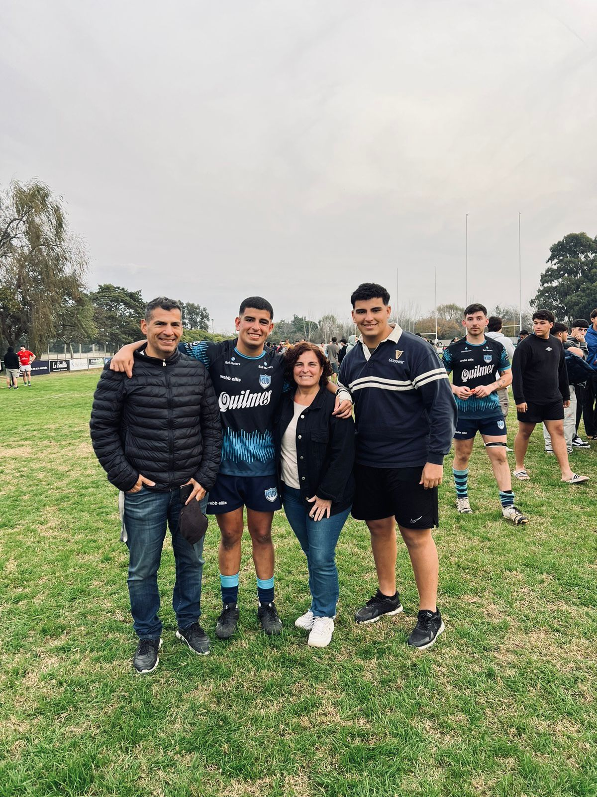

Nombre completo: Maria Pia Cichero.
Edad: 56 años.
Ocupación: Soy docente, profesora de Ciencias Políticas.
Intereses: Perfeccionarse en nuevos contenidos, miradas sociales y técnicas pedagógicas.
Historia:Nací en 1967, en la Ciudad de Quilmes, de joven descubrí que mi vocación era la docencia, pero también la Ciencia Política. Así fue como me recibí de profesora en Ciencias Jurídicas, Políticas y Sociales en el Instituto Superior del Profesorado PioXII y enseguida comencé a ejercer. Siempre creí en la educación como medio de crecimiento personal y, por lo tanto, fue lo primero que les transmití a mis alumnos. Sigo trabajando en colegios secundarios.
Logros: Competimos con mis alumnos en Modelos de Naciones Unidas a nivel nacional e Internacional quedando en los primeros puestos. Capacitarme para cargos directivos e institucionales. Ganar por concurso un cargo directivo-administrativo.
